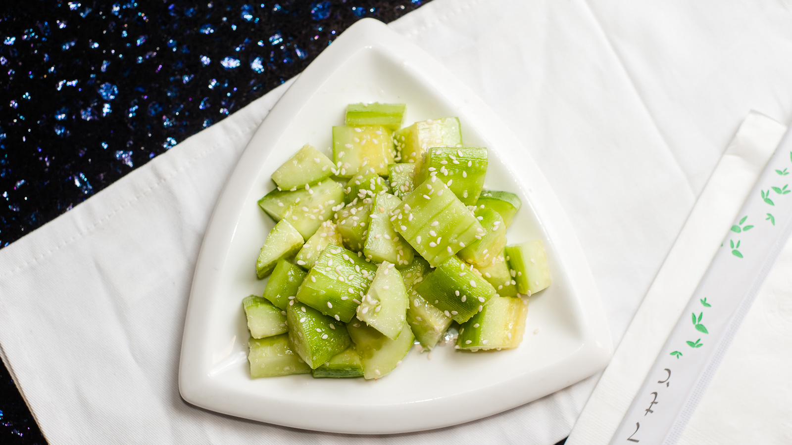

The Best Sesame Cucumber Salad Recipe On This Planet!
Sesame Cucumber Salad
https://www.themealdb.com/meal/53378-sesame-cucumber-salad-recipe

Sesame cucumber salad
Ingredients
- 2 medium Cucumber
- Half TSP Salt
- 2 TSP Sesame Seed Oil
- 2 tablespoons Rice Vinegar
- 6 Basil Leaves
- Half TSP Red Chili Flakes
- 2 TSP Sesame Seeds
Equipment
- Vegetable Peeler
- Knife
- Serving Bowl
Directions
- Peel the cucumbers
- Cut them into quarters by length
- Discard bitter seeds
- Cut the cucumbers into half-inch thick pieces
- Place the cucumbers into a serving bowl. Sprinkle them with salt, sesame oil, rice vinegar, basil, and chili flakes
This page created as academic activity only.